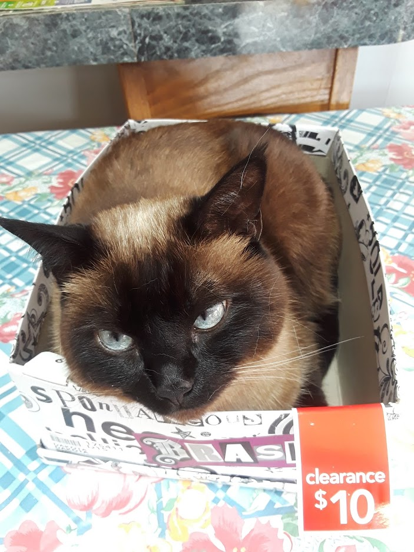

Christian Richard's Page
Dogs
Dogs are very much Christian's prefered species of pet to have and nothing will ever change that.

- Carly: A Yorkie-Poodle mix who might be a tad overweight, but makes up for it by being the one who sleeps with Christian during the night and is the pet he shares the closest bond with.
- Shadow: A Toy Poodle that is a bit of a brat and can't seem to make up her mind if she wants to stay outside or inside.
- Holly: A Boston Terrier who likes to lay in sunlight, is a bit gassy, and enjoys licking Christian way too much.
Cats
Compared to dogs, cats are a bit more... aggressive towards Christian for lack of a better term. Needless to say, he tends to be slightly more cautious around cats.
- Mini: A Siamese cat that seemingly loves to hide in Christian's closet and sit in boxes for no apparent reason.
- Benji: A tomcat that doesn't like anyone except for Christian's dad and steals the dogs' beds (the little jerk...).
- Meander: A stray cat we took in after it hung around our porch for a week in the cold (poor guy...).